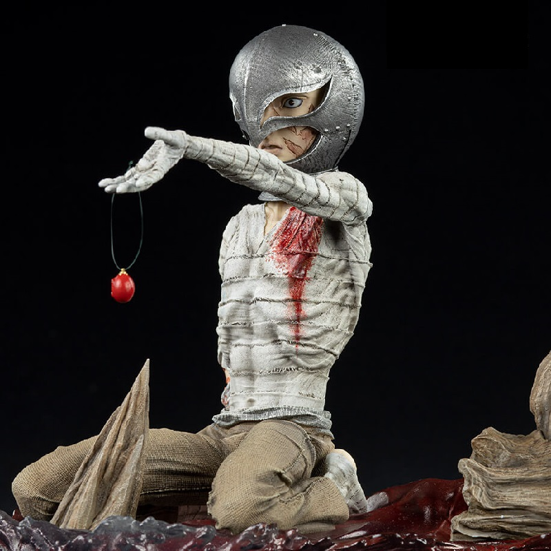
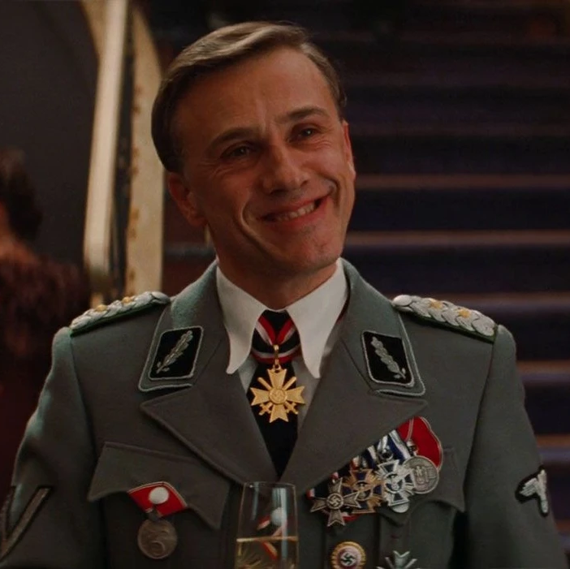
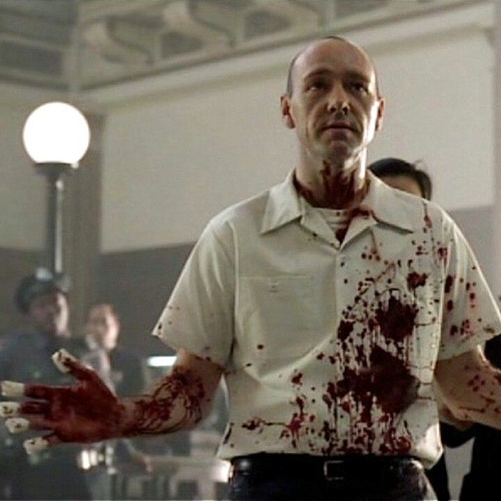
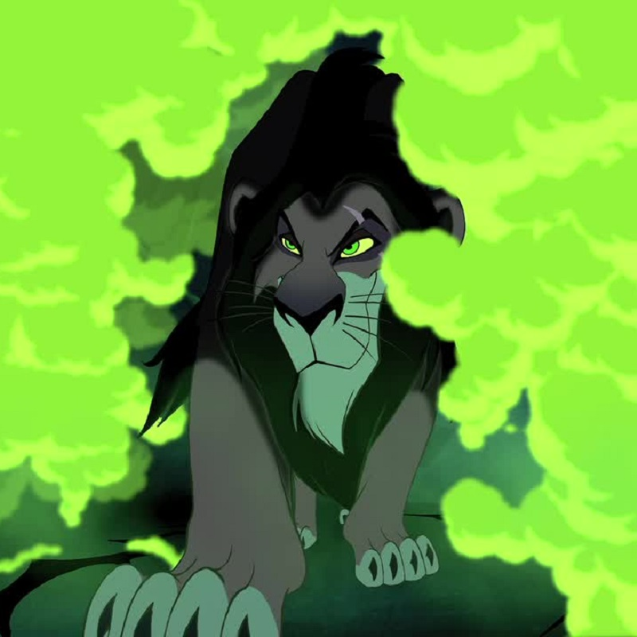
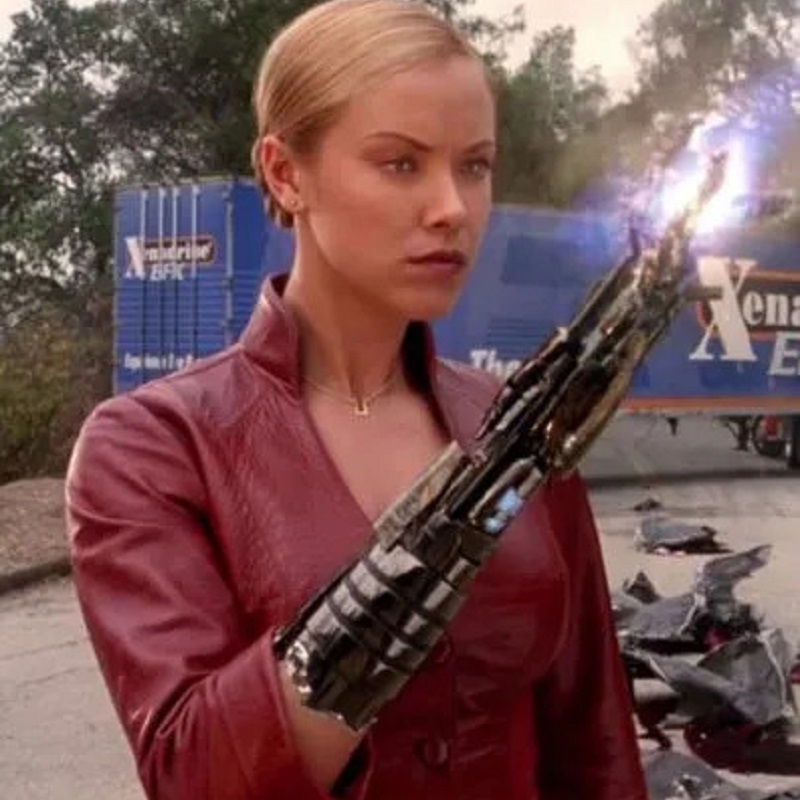
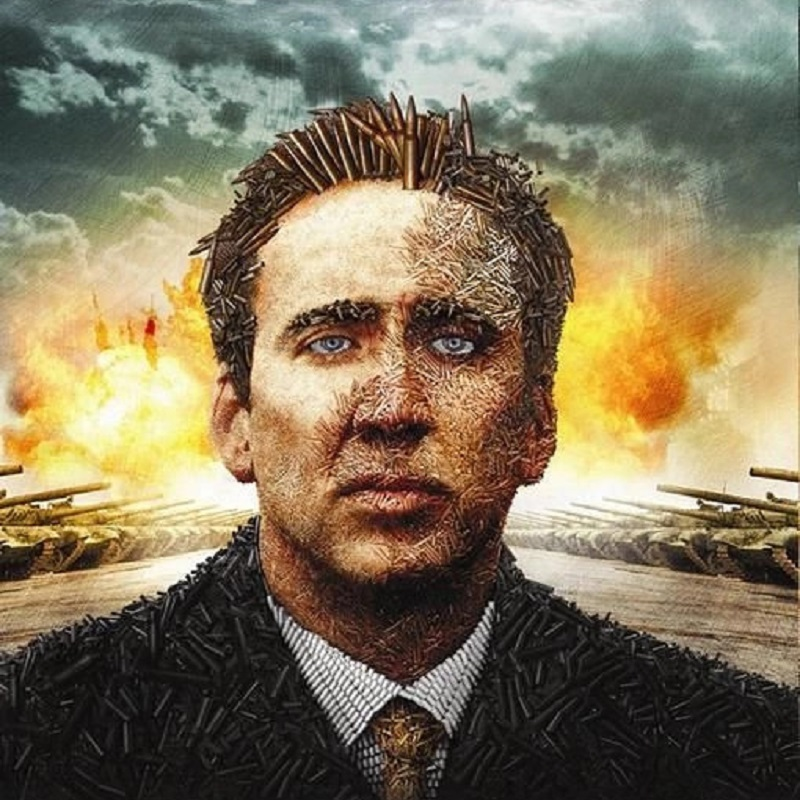

Le mal sur vos écrans
Une panoplie des plus terribles personnages que nous ayons connus

Les méchants dans les histoires fascinent les gens parce qu'ils ajoutent du piquant à l'intrigue. Ces personnages maléfiques ont souvent des traits de personnalité captivants, comme la ruse, la détermination ou la perspicacité, qui les rendent mémorables. Les gens sont intrigués par ce qui les motive et parfois même peuvent sympathiser avec eux, malgré leurs actions négatives. En fin de compte, les méchants fournissent un élément de tension et de suspense qui rend les histoires plus captivantes. C'est un peu comme une attraction pour l'interdit qui pique la curiosité des gens.
Les méchants dans les histoires fascinent les gens parce qu'ils ajoutent du piquant à l'intrigue. Ces personnages maléfiques ont souvent des traits de personnalité captivants, comme la ruse, la détermination ou la perspicacité, qui les rendent mémorables.
Les gens sont intrigués par ce qui les motive et parfois même peuvent sympathiser avec eux, malgré leurs actions négatives. En fin de compte, les méchants fournissent un élément de tension et de suspense qui rend les histoires plus captivantes. C'est un peu comme une attraction pour l'interdit qui pique la curiosité des gens.
(par ordre alphabétique lol mdr)
| Nom | Oeuvre | Image | Catégorie | Singularité maléfique |
|---|---|---|---|---|
| Bellatrix Lestrange | Harry Potter | Folle | Sa passion pour la torture | |
| Calvin Candie | Django Unchained | Fou | Son coté sociable et élégant | |
| Griffith | Berserk |  | Caché | Son égoisme / son talent pour le domination |
| Hannibal Lecter | Le Silence des Agneaux | Fou | Sa célèbre muselière | |
| Hans Landa | Inglourious Basterds |  | Caché | Sa douceur dans son uniforme nazi |
| Jack Torrance | Shining | Fou | Son sourire de psychotique | |
| John Doe | Se7en |  | Fou | Sa foi meurtrière |
| Joker | Batman | Fou | Son rire qui glace le sang | |
| Pennywise | Ça |  |
Hors cinéma | Ses multiples apparences |
| Sauron | Le Seigneur des Anneaux | Célèbre | Son Oeil | |
| Scar | Le Roi Lion |  | Caché | Sa trahison |
| La Sorcière Rouge | X-men |  |
Hors cinéma | Ses pouvoirs qui se mellent à sa maladie mentale |
| L'agent Smith | Matrix |  |
Fou | Ses caracteristiques de virus |
| T-X | Terminator 3 |  | Célèbre | Son apparence séduisante, mais mortelle |
| Dark Vador | Star Wars |  |
Célèbre | Sa respiration unique |
| Majin Vegeta | Dragon Ball |  |
Hors cinéma | Le bien qui transparait malgré lui |
| Walter White | Breaking Bad |  |
Caché | Sa gentillesse face à ses actes terribles |
| Yuri Orlov | Lord of War |  | Caché | Sa vision amorale du monde |